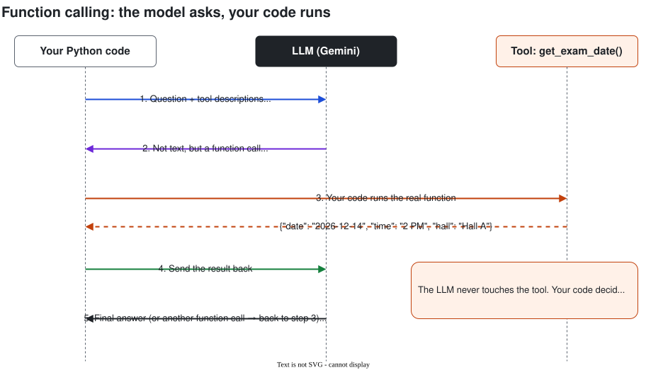

GenAI & Agentic AI Workshop · Day 2 · Session 7
Tool Calling and MCP
Build the agent loop for real, then share your tools with any AI app
Press → to move · S for speaker notes · F for full screen
Yesterday you were the Tools person 🎭
Today, Python plays that role.
decision = llm(memory, tools) # THINK
result = tools[decision.tool](**decision.args) # ACT: your code runs it
memory.append((decision, result)) # OBSERVEThe API feature that makes this real: function calling.
Function calling, step by step

A tool is just a Python function
def get_exam_date(subject: str) -> dict:
"""Get the date, day, time and hall of a student's semester exam."""
exam = EXAMS.get(subject.strip().upper())
if exam is None:
return {"error": f"No exam found for '{subject}'. Known subjects: DBMS, OS, CN."}
return examThe model never sees this code. It sees only the declaration:
{"name": "get_exam_date",
"description": "Get the date, day, time and hall of a student's semester exam.",
"parameters": {"type": "object",
"properties": {"subject": {"type": "string", "description": "DBMS, OS or CN"}},
"required": ["subject"]}}Good tools 🧰
Clear description
What it does + when to use it
Describe every parameter
Formats: "YYYY-MM-DD", "1 to 3"
Return errors, don't crash
{"error": "No exam for Maths"}
Small and focused
Separate read-only from actions
One round by hand
resp = client.models.generate_content(model=MODEL, contents=question, config=config)
call = resp.function_calls[0] # get_exam_date {'subject': 'OS'}
result = TOOLS[call.name](**call.args) # WE run it
contents = [question_content,
resp.candidates[0].content, # model's request
types.Content(role="user", parts=[
types.Part.from_function_response(name=call.name, response={"result": result})])]
final = client.models.generate_content(model=MODEL, contents=contents, config=config)Same "re-send the history" idea as Session 3.
The real agent loop 🔁
for step in range(1, max_steps + 1): # capped
resp = client.models.generate_content(..., contents=contents, config=config)
if not resp.function_calls:
return resp.text # done
contents.append(resp.candidates[0].content)
for call in resp.function_calls: # may be several!
if call.name in NEEDS_APPROVAL and input("Approve? ") != "y":
result = {"status": "cancelled"}
else:
result = TOOLS[call.name](**call.args)
... # send all results backWatch it run 👀
🛠️ step 1: get_exam_date({'subject': 'OS'})
👀 {'date': '2026-12-14', 'day': 'Monday', 'time': '2 PM', 'hall': 'Hall A'}
🛠️ step 2: get_library_hours({'date': '2026-12-13'})
👀 {'day': 'Sunday', 'open': '10:00', 'close': '16:00', ...}
🛠️ step 3: book_study_room({'date': '2026-12-13', 'start': '10:00', 'hours': 2})
Approve? (y/n) y
👀 {'status': 'confirmed', 'room': 'S1', ...}Session 6's paper exercise, for real.
Real APIs and the shortcut
🌦️ Live weather tool
Open-Meteo: free, no key.
"Should I carry an umbrella tomorrow?" → real rain chance.
⚡ Automatic function calling
tools=[get_exam_date, get_weather]
SDK runs the loop for you.
But: no approval step, less control.
Why MCP? 🔌

Host, client, server

Your MCP server: ~10 lines
from mcp.server.mcpserver import MCPServer
from campus_tools import get_exam_date, get_library_hours, book_study_room, get_weather
mcp = MCPServer("campus")
for fn in (get_exam_date, get_library_hours, book_study_room, get_weather):
mcp.add_tool(fn)
if __name__ == "__main__":
mcp.run() # stdioOlder tutorials (SDK v1): from mcp.server.fastmcp import FastMCP. Same idea, new name.
Plug it in anywhere
🐍 Your agent
session.list_tools()session.call_tool("get_exam_date", {...})
💬 Claude Desktop
"mcpServers": {"campus": {"command": "python", "args": ["campus_server.py"]}}
⌨️ Claude Code
claude mcp add campus -- python campus_server.py
🧑💻 VS Code / Cursor
Add the same server in MCP settings
Tools = power. Stay safe ⚠️
- Least privilege: a booking tool, not "run any SQL"
- Human approval for actions that change things
- Validate arguments in code · cap the loop · log every call
- Only install MCP servers you trust: they run code on your machine and can hide instructions in tool descriptions
Lab: timetable agent + MCP server (35 min) 🧪
Part A: function calling
- Write + test 4 tools
- Declare them
- One round by hand
- Agent loop + approval
- Automatic shortcut
Part B: MCP
- Tools → MCP server
- MCP client: list + call
- Gemini + MCP
- Laptop: Claude Desktop / VS Code
Recap
- Model returns a function call; your code runs it
- Model sees only the declaration: write it well
- Return errors, don't crash
- Agent loop = function calling, capped, with approval
- MCP = USB-C for AI tools: build once, use anywhere
- Host → client → server · stdio or HTTP
Quick quiz 🧠
- Model wants a tool. What does it send? Name + arguments
- Why return
{"error": ...}? So the model can explain or retry - What problem does MCP solve? apps × tools custom integrations
- Random "free tools" MCP server: risk? It runs code on your machine
Up next · Session 8
Agent Frameworks & Multi-Agent Systems
LangGraph, CrewAI and agent SDKs; build a researcher + writer team
Questions? 🙋